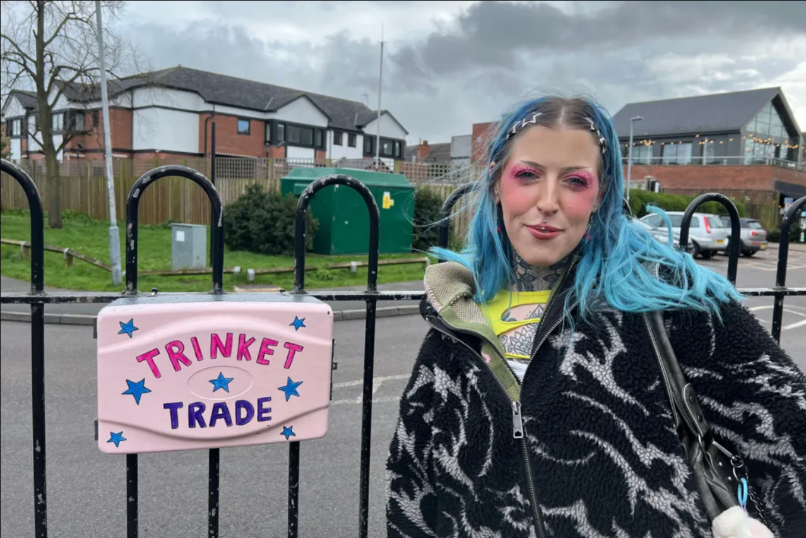
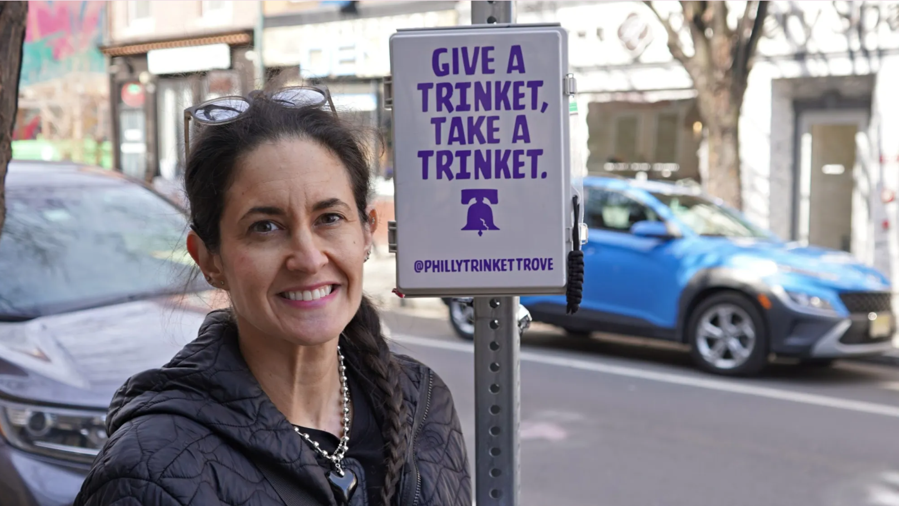
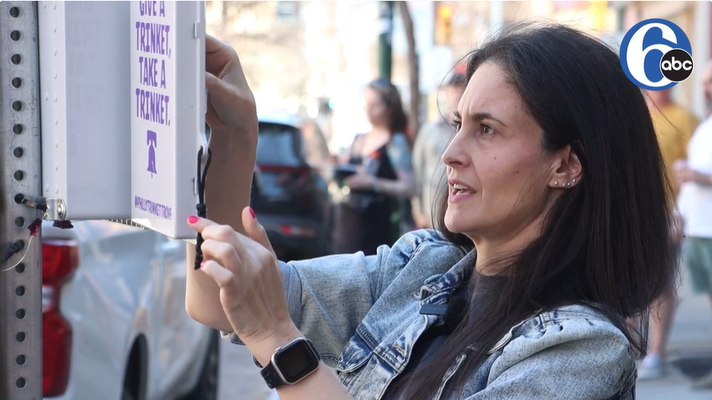

What is Trinket Trading?
Where to Trade
Get Inspired

Why are people trading trinkets in junction boxes?
By Caroline Lowbridge, BBC News (April 12, 2026).

How Philly Trinket Trove is inspiring joy, one small item at a time
By Nick Kariuki, Billy Penn (March 20, 2026).

Miniature treasures can be found on South Street in the 'Philly Trinket Trove'
By Nick Iadonisi, 6ABC News (March 14, 2026).